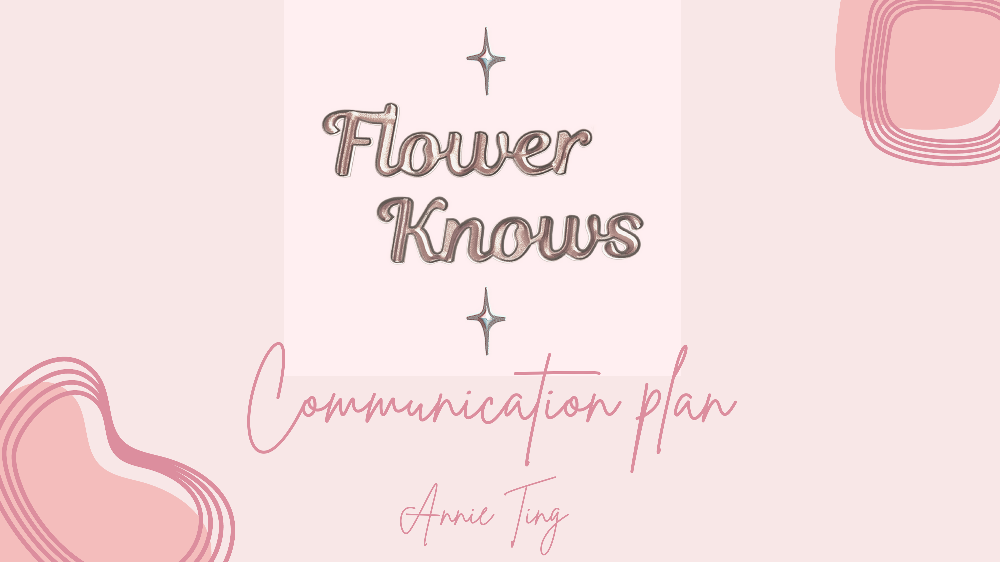
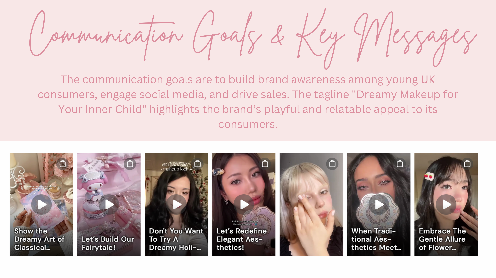
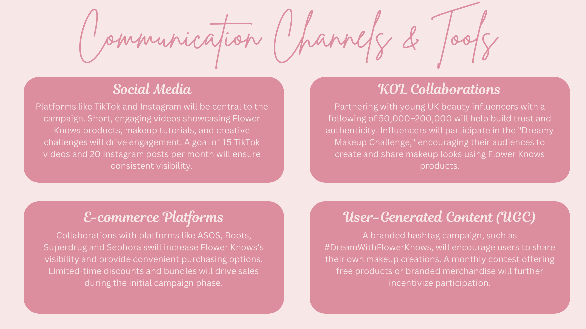

.svg)

Case Study / Digital Communication
Designing a Gen Z Beauty Launch Strategy for Flower Knows
A UK communication plan introducing Flower Knows through dreamy aesthetics, social participation, and youth-oriented beauty culture.
Audience definition, platform planning, influencer strategy, UGC design, and KPI setting
Gen Z and Millennial women aged 18-30 in the UK, with strong social media habits and an appetite for playful, affordable beauty

Flower Knows Communication Plan
This project focuses on introducing Flower Knows to the UK market as a youthful and whimsical Chinese makeup brand. The plan uses dreamy aesthetics, affordability, and social participation to appeal to young consumers who are highly active online.
ObjectiveTo build awareness, social engagement, and sales through a communication strategy tailored to Gen Z and Millennial consumers in the UK.
Plan ScopeCore strategy, key message, communication channels, influencer and UGC activity, budget allocation, and evaluation metrics.
Process
From playful identity to participation strategy.
The plan moved from brand character and audience fit into platform choices, creator collaborations, and measurable participation goals.
Defined the target market as young women aged 18-30 drawn to affordability, novelty design, and social sharing.
Built the strategy around the brand's dreamy, youthful style and the tagline “Dreamy Makeup for Your Inner Child”.
Mapped the campaign across TikTok, Instagram, KOL collaborations, UGC, and e-commerce support.
The central message framed Flower Knows as playful, visually appealing, and emotionally relatable. Instead of luxury positioning, the plan focused on imagination, affordability, and shareable beauty expression.

Channel Mix
A social-first launch system.
The communication plan brought together short-form content, influencer trust-building, user participation, and e-commerce visibility rather than relying on one platform alone.

Budget / Evaluation
A communication plan with measurable growth goals.
The project paired the creative idea with channel budgets and success metrics for awareness, UGC, influencer ROI, sales, and engagement.
This project strengthened my ability to turn a playful brand identity into a structured communication system with budget, creators, commerce, and KPI logic.
The plan allocated £100,000 across social media advertising (50%), KOL collaborations (30%), UGC campaigns (10%), and e-commerce promotions (10%).
Targets included 7 million impressions, a 3% click-through rate, 1,000 UGC posts, and 1 million total interactions over three months.
The campaign aimed for a 25% increase in UK search volume, 20% e-commerce sales growth, and a 10% uplift in website visits driven by influencer content.
Launching Florasis in the UK Through Premium Eastern Aesthetics
A UK market-entry promotion plan positioning Florasis through artistry, cultural heritage, and premium storytelling.
Open previousAuthenticity, Luxury Beauty, and Gen Z on Instagram
Independent final-year research on how London-based Gen Z beauty consumers negotiate authenticity in sponsored luxury beauty content on Instagram.
Open next